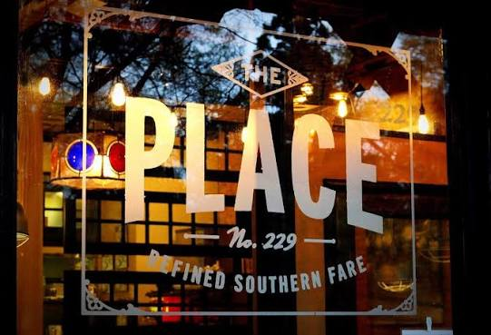

Last Resort Grill
Last Resort Grill is a local favorite for its delicious Southern cuisine. I prefer to get their scallops served with grits and the caramel cake for dessert.

Location and Contact Info
Address: 174 E Clayton St, Athens, GA 30601
Phone: (706) 549-0810
Baddies Burgers
Baddies Burgers does't just have amazing smash burgers, but also has the best banana pudding. The food always come out fast and is cooked to perfection.

Location and Contact Info
Address: 174 E Clayton St, Athens, GA 30601
Phone: (706) 543-1234
Cali n Tito's
Cali n Tito's is a local favorite for its delicious Cuban cuisine and lively atmosphere. My favorite dish is the empanadas with the yuca frita.

Location and Contact Info
Address: 1591 S Lumpkin St Ste A
Phone: (706) 850-8331
The Place
The Place is a local favorite for its delicious Southern cuisine. The menu has a lot of options to choose from, but I like the classic chicken sandwich.

Location and Contact Info
Address: 229 Broad Street, Athens, GA 30601
Phone: (706) 850-2988